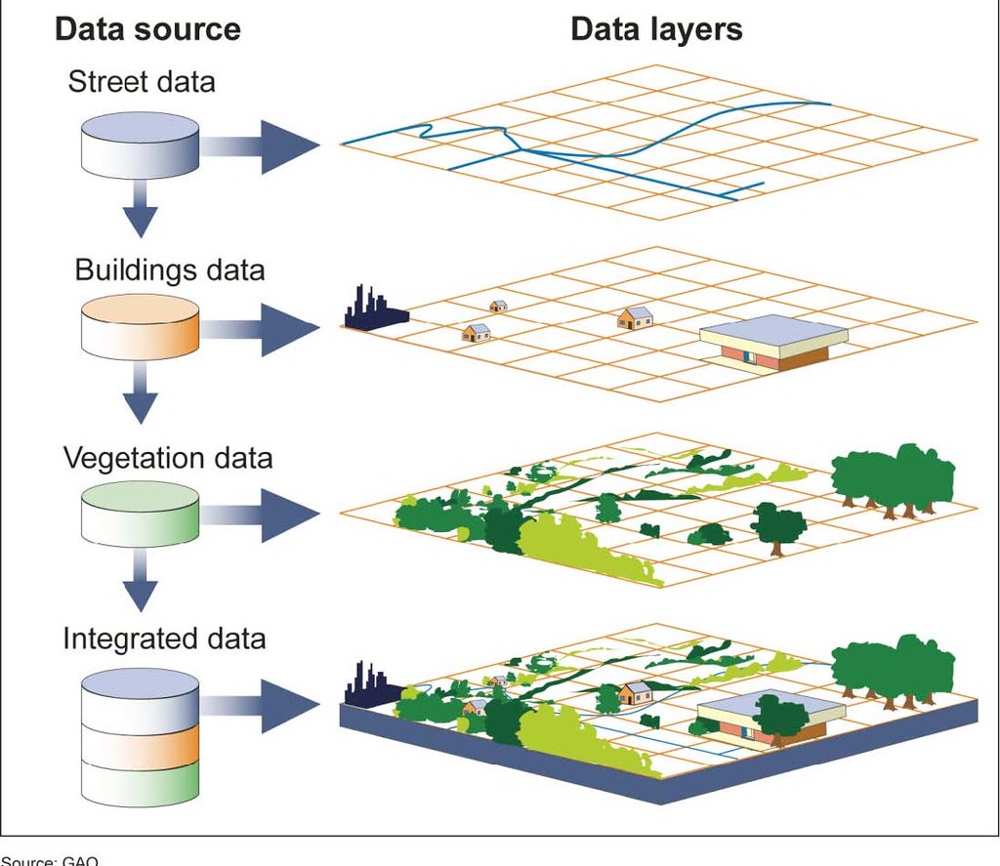
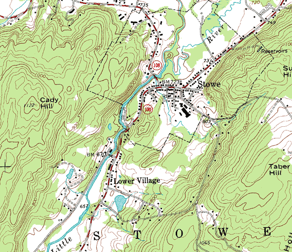
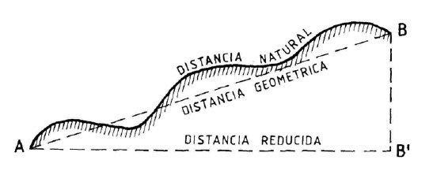
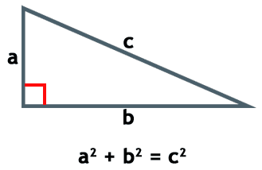
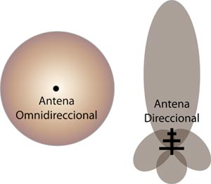

«La ciència pot divertir-nos i fascinar-nos a tots, però és l'enginyeria la que canvia el món»
El Repte a Pocona
En aquesta unitat ens posarem en la pell d'un grup d'enginyers i enginyeres que participen en un projecte de cooperació pel desenvolupament al municipi de Pocona (Bolívia).
El nostre objectiu serà dissenyar i implementar solucions reals i sostenibles per trencar l'aïllament geogràfic i digital de comunitats rurals aïllades, tot desplegant una xarxa de telecomunicacions per ràdioenllaços i sistemes d'emergència.

Comunitat rural de Pocona (Departament de Cochabamba, Bolívia). Fes clic per ampliar.
Objectius d'Aprenentatge
Durant el desenvolupament d'aquest repte, assolirem les següents competències clau:
Analitzar situacions de la vida real en països del Sud global per proposar solucions sostenibles, respectuoses i contextualitzades.
Aplicar la geometria (teorema de Pitàgores, mediatrius, circumcentres i escales) per argumentar i resoldre problemes topogràfics.
Construir estructures simples i resistents (torres ventades de comunicacions) seguint les fases del disseny i verificació tècnica.
Programar dispositius i microcontroladors per transmetre informació mitjançant sistemes de comunicació sense fils (òptics i de ràdio).
Elaborar un pòster divulgatiu de rigor acadèmic per comunicar i defensar els resultats del projecte davant la comunitat.
Objectius de Desenvolupament Sostenible (Agenda 2030)
Aquest projecte connecta directament amb dos dels reptes globals més decisius:

Igualtat de Gènere
Aconseguir la igualtat entre gèneres i empoderar totes les dones i les nenes: Reflexionarem sobre la desigualtat de gènere, sobretot en contextos socioeconòmics desfavorables i àmbits rurals, a la vegada que posarem en valor referents femenins cabdals en l'enginyeria i la cooperació.

Indústria, Innovació i Infraestructura
Construir infraestructures resilients i sostenibles: Reconeixerem els problemes associats a la manca d’accés a les noves tecnologies i telecomunicacions, proposant solucions tècniques de xarxa per facilitar l'educació i l'assistència sanitària a distància (e-Salut).
Quins materials necessitarem a l'aula?
Per dur a terme les activitats de dibuix tècnic, cartografia i càlcul geomètric de les primeres sessions, necessitareu el següent material individual i de grup:

Per al traçat d'arcs, mediatrius i la circumferència circumscrita.

Imprescindibles per dibuixar rectes perpendiculars i paral·leles exactes.

Permet mesurar segments en làmines A3 i traslladar les escales cartogràfiques.
Avaluació Inicial: KPSI e-Salut
Abans de començar la unitat, és fonamental que cadascú avaluï honestament els seus coneixements previs:
Què és la cooperació pel desenvolupament?
La cooperació pel desenvolupament és el conjunt d'actuacions i iniciatives dutes a terme per països, organitzacions no governamentals (ONG) i la ciutadania amb l'objectiu de promoure el progrés econòmic i social sostenible, l'equitat, la justícia social i la protecció del medi ambient als països del Sud global.
Lluny del concepte assistencialista o de caritat, la cooperació transformadora treballa colze a colze amb les comunitats locals: escoltant les seves necessitats autèntiques, reforçant les seves capacitats pròpies i transferint tecnologia accessible que pugui ser gestionada i mantinguda per la mateixa població.
Mirtha Téllez — Directora de l'ONG boliviana Mosoj Kausay
Per conèixer de primera mà la realitat social i les necessitats sanitàries de les comunitats rurals a Bolívia, comptem amb el testimoni directe de Mirtha Téllez, directora de l'ONG Mosoj Kausay ("Vida Nova" en quítxua). Escolteu atentament les seves reflexions per comprendre el propòsit humà de la nostra feina d'enginyeria:
Com és l'accés a les noves tecnologies i comunicacions a Llatinoamèrica?
A la majoria de grans ciutats llatinoamericanes, l'accés a la fibra òptica i al 4G/5G és comú. Tanmateix, a les zones rurals d'alta muntanya o comunitats indígenes, la bretxa digital és colossal. La manca de xarxa elèctrica estable i l'orografia escarpada impedeixen que les grans operadores privades inverteixin en infraestructures.
Activitat: Analitzem les comunitats del municipi de Pocona
En els projectes de cooperació pel desenvolupament, és imprescindible analitzar exhaustivament la situació de partida: conèixer la demografia, els camins d'accés, les preocupacions dels vilatans i les carències sanitàries.
Per aquest motiu, hem enviat a Pocona a un equip d'enginyers i cooperants amb l'objectiu de recollir dades de camp i redactar un informe tècnic complet, estructurat en 4 apartats:
- 1. Ubicació geogràfica: Situació al Departament de Cochabamba, alçades sobre el nivell del mar i serralades.
- 2. Divisió política i administrativa: Els cantons de Pocona i la dispersió de les seves comunitats.
- 3. Accés a les comunicacions a Bolívia: Situació de la telefonia mòbil i cobertura d'antenes nacionals.
- 4. Accés a les comunicacions a Pocona: Zones d'ombra radioelèctrica, manca de cobertura mèdica i aïllament.

Mapa de distribució territorial de les comunitats del municipi de Pocona. Fes clic per ampliar.
La Metodologia de l'Arbre de Problemes
Amb la informació extreta de l'informe tècnic, cada equip de treball haurà de dissenyar un arbre de problemes (una eina fonamental en cooperació i gestió de projectes, similar a un mapa conceptual causal). En aquest diagrama heu de distingir clarament:
És la dificultat principal no resolta que pateix la població (ex. "Incomunicació i manca d'assistència sanitària immediata a les comunitats rurals de Pocona").
Els factors que provoquen aquest problema: orografia complexa, manca d'inversió comercial, manca de torres repetidores, absència d'electricitat de xarxa.
Les conseqüències directes: retards greus en l'atenció d'urgències mèdiques, aïllament educatiu, pèrdua d'oportunitats per a dones i joves.

Esquema metodològic d'un Arbre de Problemes. Fes clic per ampliar.
La Geometria: Fonament del Pensament i la Tècnica
«ἀγεωμέτρητος μηdeìς εἰσίτω»
La geometria és la branca del coneixement que s'ocupa dels objectes o figures i de les seves relacions en l'espai. Amb la geometria s'aprèn a raonar amb precisió i a fer abstraccions. Però Sòcrates, a més, afegia:
«Amb la geometria s'aprèn a apreciar la bellesa de l'harmonia i les proporcions. Sense la geometria, no hi ha harmonia; sense harmonia, és impossible la convivència i sense la convivència, no hi ha amistat.»

L'harmonia i la construcció geomètrica de l'espai. Fes clic per ampliar.
Sistemes d'Informació Geogràfica (SIG)
Un Sistema d'Informació Geogràfica (SIG / GIS) és un sistema informàtic que ens permet emmagatzemar, consultar, modelar i analitzar qualsevol classe d'informació referenciada espacialment.
Els SIG són vitals en països en vies de desenvolupament per gestionar recursos hídrics, planificar xarxes elèctriques i sanitàries, o coordinar operacions d'emergència i salvament davant desastres naturals com terratrèmols, allaus o inundacions.

Visualització geoespacial en temps real amb SIG. Fes clic per ampliar.
Mapes Topogràfics i Escales
Un mapa topogràfic és una representació gràfica, rigorosament a escala, d'una porció de la superfície terrestre. Reflecteix la morfologia del relleu (orografia), la xarxa fluvial (hidrografia), les vies de comunicació, els pobles i els límits administratius.
Com funciona l'escala?
L’escala és la relació matemàtica entre les dimensions de la representació al mapa i les dimensions reals al terreny:
Per exemple, a escala 1:1.000 la realitat s'ha reduït 1.000 vegades: 1 cm al mapa equival a 10 metres reals (1.000 cm = 10 m).

Comparació d'escala gràfica i escala numèrica. Fes clic per ampliar.

Mapa topogràfic amb orografia i xarxa hidrogràfica. Fes clic per ampliar.
Conversor Interactiu d'Escales Cartogràfiques
Corbes de Nivell, Cotes i Perfils
Corbes de nivell (Isohipses)
Una corba de nivell és una línia imaginària que uneix tots els punts que es troben a la mateixa altitud sobre el nivell del mar.
Quan les corbes estan molt juntes, indiquen un fort pendent o penya-segat. Quan estan separades, el terreny és planer o de pendent suau.

Lectura de corbes mestres i corbes secundàries. Fes clic per ampliar.
El Perfil Topogràfic
Mentre que el mapa ens mostra el terreny a "vista d'ocell" des de dalt, el perfil topogràfic n'és la secció vertical: el relleu vist de costat.
Aquest perfil és crucial per saber si hi ha visió directa (*Line of Sight*) entre dues muntanyes abans d'instal·lar-hi una antena WiMAX.

Passos per traçar un perfil topogràfic sobre paper mil·limetrat. Fes clic per ampliar.
Distància Horitzontal i Distància Geomètrica (Teorema de Pitàgores)
Al mapa topogràfic només podem mesurar la distància horitzontal o reduïda ($d_h$). Però si el punt B està a més altitud que el punt A, la distància real que haurà de recórrer el senyal de ràdio és la distància geomètrica en línia recta ($d_g$).
Aquesta hipotenusa es calcula directament amb el Teorema de Pitàgores coneixent la diferència d'altitud (desnivell $\Delta h = cota_B - cota_A$):


Triangle rectangle i relació geomètrica a² + b² = c². Fes clic per ampliar.
Calculadora Interactiva de Distància Geomètrica (Ràdioenllaços)
Mediatriu i Circumcentre en el Repartiment de Senyal
Per trobar la posició idònia on col·locar una torre repetidora que doni cobertura exactament a la mateixa distància a tres pobles diferents (Pocona, Chimboata i Chillijchi), fem servir el circumcentre:
- Mediatriu: La recta perpendicular a un segment que passa exactament pel seu punt mitjà. Tots els seus punts equidisten dels dos extrems.
- Circumcentre: El punt d'intersecció de les tres mediatrius d'un triangle. És el centre de la circumferència circumscrita que passa pels tres vèrtexs.
Tecnologia WiMAX: Direccional vs Omnidireccional
WiMAX és una tecnologia d'accés sense fils d'alta velocitat dissenyada per enllaçar punts a llargues distàncies (de diversos quilòmetres). En el nostre desplegament fem servir dos tipus d'antenes:

Diagrama de radiació i enllaços punt a punt vs multipunt. Fes clic per ampliar.
Dossier d'Activitats i Casos d'Estudi
Desplega cadascun dels blocs per consultar els enunciats de treball i els documents tècnics de viabilitat:
Activitats de Coneixements Previs (Geometria i Escales)
Exercicis pràctics per consolidar el càlcul d'escales cartogràfiques i la resolució de triangles rectangles amb Pitàgores:
Cas 1: Estudi de Viabilitat del Ràdioenllaç
Enunciat i dades topogràfiques reals de les primeres dues comunitats de Pocona per comprovar la línia de visió directa:
Cas 2: Estudi de Viabilitat i Ubicació del Repetidor
Detecció d'obstacles orogràfics i elecció del millor cim per instal·lar la torre de comunicacions amb antenes WiMAX:
Rúbrica d'Autoavaluació de l'Estudi del Terreny
Comproveu que compliu tots els criteris de qualitat abans de lliurar la vostra proposta d'enginyeria:
Construcció de Torres Ventades (Arriostrades)
Una torre ventada (o torre arriostrada) és una estructura metàl·lica modular de secció triangular o quadrada que s'aguanta verticalment gràcies a cables d'acer tensats (anomenats vents o tirants), ancorats fermament a terra.
Són les estructures més utilitzades en telecomunicacions rurals perquè ofereixen una gran alçada (de 15 a 45 metres) amb un cost de material i una facilitat de transport molt superiors a les torres autoportants pesades.
Com es munta una torre al terreny real?
Plànols de Construcció i Detalls d'Enginyeria
Consulteu els croquis oficials de disseny per al prototip de torre ventada que construirem a escala al taller:
Formulari: Reconnectem amb Pocona
Registreu la planificació i comprovacions del vostre equip abans d'iniciar la fase de transmissió de dades:
1. Sistemes de Comunicació amb Infrarojos
Abans de passar a la ràdiofreqüència d'alta potència, simulem el principi de transmissió digital d'informació a través d'un feix de llum infraroja (IR): modulació binària mitjançant díodes emissors LED IR i fotoreceptors.
2. Pocona: Xarxa de Comunicacions
Estructura del mapa d'enllaços entre l'ambulatori de salut central de Pocona, els repetidors intermedis i els llocs de socors remots:
3. Prova de Programació i Robòtica
Posa a prova les teves habilitats en programació de microcontroladors (codificació de missatges, sensors ambientals i recepció de paquets sense fils):
KPSI Justificat: Pocona
Ha arribat el moment de contrastar el que sabies al principi del projecte amb el que has après a través de l'enginyeria. Emplena el KPSI final justificant cadascuna de les teves respostes amb les evidències de les activitats fetes:
El Pòster Divulgatiu del Projecte
Com a enginyers i enginyeres de cooperació, la vostra feina no s'acaba quan la torre està dreta o el programa funciona: cal comunicar la solució a la societat, als donants i a la comunitat beneficiària.
Títol del projecte, integrants de l'equip, context inicial a Pocona, el repte i la hipòtesi de treball.
Gràfics del perfil topogràfic, el càlcul de distàncies amb Pitàgores, la torre ventada i les antenes WiMAX escollides.
Com millora aquesta xarxa la salut comunitària (ODS 9) i com empodera les dones i nenes de Pocona (ODS 5).
Galeria d'Imatges del Procés
Accediu a la carpeta de recursos gràfics i fotografies de les sessions de construcció i proves de camp: